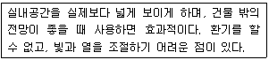
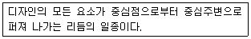
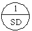
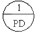
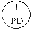
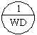
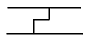
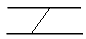
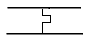
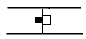

실내건축기능사 (2006-04-02 기출문제)
1과목: 실내디자인
1. 창의 종류 중 천창의 설명으로 가장 거리가 먼 것은?
- 건축 계획의 자유도가 증가한다.
- 벽면 이용을 더욱 다양하게 활용할 수 있다.
- 차열, 통풍에 유리하고 개방감이 적다.
- 채광에 유리하며, 채광량이 많아지고 조명도가 균일하게 된다.
(정답률: 60%)

2. 다음 중 황금비로 옳은 것은?
- 1:1.168
- 1:1.732
- 1:1.618
- 1:1.816
(정답률: 77%)
3. 다음 설명하는 창의 종류는?

- 미서기창
- 고정식창
- 오르내리기창
- 빗살창
(정답률: 89%)
4. 실내디자이너의 역할로 가장 적절한 것은?
- 실내디자이너의 영역은 내부공간 구성에 한정된다.
- 생활공간의 편리한 기능과 쾌적성을 부여한다.
- 실내공간의 기능성보다 예술성을 우선한다.
- 실내디자이너는 설계의 역할만 담당한다.
(정답률: 89%)
5. 생활공간의 용도 및 기능에 따른 분류 중 사회공간으로 볼 수 있는 것은?
- 침실, 공부방, 서재
- 부엌, 세탁실, 다용도실
- 식사실, 거실, 현관
- 화장실, 세면실, 욕실
(정답률: 87%)
6. 선의 설명으로 부적당한 것은?
- 직선 - 단순
- 수직선 - 정적인 표정
- 수평선 - 평화롭고 정지된 모습
- 사선 - 동적이고 불안정한 느낌
(정답률: 61%)
7. 건물과 일체화하여 만든 가구로서 공간을 최대한 활용할 수 있는 가구는?
- 가동 가구
- 붙박이 가구
- 모듈러 가구
- 작업용 가구
(정답률: 98%)
8. 디자인의 원리 중 휴양목적 공간에 주로 이용되는 것은?
- 양식통일
- 정적통일
- 동적통일
- 한식통일
(정답률: 29%)
9. 다음이 설명하고 있는 것은?

- 강조
- 조화
- 방사
- 통일
(정답률: 93%)
10. 공간대상에 따른 분류에서 업무공간에 해당되는 것은?
- 아파트
- 터미널
- 백화점
- 은행
(정답률: 91%)
11. 다음 중 건축의 조형에서 균형과 가장 거리가 먼 것은?
- 비례
- 주도와 종속
- 리듬
- 대칭
(정답률: 23%)
12. 동선계획을 가장 잘 나타낼 수 있는 실내계획은?
- 천장계획
- 입면계획
- 평면계획
- 배치도계획
(정답률: 87%)
13. 가구와 설치물의 배치 결정시 가장 우선적으로 고려되어야 할 사항은?
- 재질감
- 색채감
- 스타일
- 기능성
(정답률: 88%)
14. 별장주택에서 흔히 볼 수 있는 유형으로 취사용 작업대가 하나의 섬처럼 실내에 설치되어 독특한 분위기를 형성하는 부엌은?
- 리빙 키친
- 다이닝 키친
- 키친 네트
- 아일랜드 키친
(정답률: 86%)
15. 부엌의 가구 배치로가장 효율적인 것은?
- 준비대 → 배선대 → 가열대 → 개수대 → 조리대 → 식사
- 준비대 → 개수대 → 조리대 → 가열대 → 배선대 → 식사
- 개수대 → 조리대 → 배선대 → 가열대 → 준비대 → 식사
- 준비대 → 배선대 → 개수대 → 조리대 → 가열대 → 식사
(정답률: 75%)
16. 건물의 일조 계획시 가장 우선적으로 고려해야 할 사항은?
- 일조권 확보
- 일영
- 종일 음영 방지
- 일사
(정답률: 87%)
17. 실감온도(ET)의 3요소와 가장 거리가 먼 것은?
- 온도
- 습도
- 복사열
- 기류
(정답률: 74%)
18. 잔향 시간에 관한 내용으로 옳지 않은 것은?
- 잔향 시간은 길면 명료성이 떨어진다.
- 잔향 시간은 실의 형태와 깊은 관련이 있다.
- 잔향 시간이 너무 짧으면 음악의 풍부성이 저하된다.
- 잔향 시간은 실의 용적에 비례하고 흡음력에 반비례한다.
(정답률: 53%)
19. 실내의 표면결로 방지법으로 옳지 않은 것은?
- 각 부의 열관류저항을 크게 한다.
- 건물 내부의 표면온도를 올리고 실내기온을 노점 이상으로 유지한다.
- 실내에서 수증기량의 발생을 많게 한다.
- 각 부의 열관류량을 적게 한다.
(정답률: 80%)
20. 실내 환기의 목적으로 가장 거리가 먼 것은?
- 호흡에 필요한 산소의 적절한 공급
- 내부 공간의 오염 피해의 최소화
- 외부열의 실내 유입
- 건물 내부의 결로 방지
(정답률: 49%)
2과목: 실내환경
21. 콘크리트의 일반적인 성질에 대한 설명 중 옳지 않은 것은?
- 성형상 자유성이 높다.
- 내구성이 양호하다.
- 압축강도에 비해 인장강도가 크다.
- 내화성이 양호하다.
(정답률: 81%)
22. 건축물의 패리핏, 주두 등의 장식에 사용되는 공동(空胴)의 대형 점토제품은?
- 모자이크 타일
- 토관
- 테라코타
- 솔라 스크린
(정답률: 79%)
23. 벽, 기둥 등의 모서리 부분에 미장바름을 보호하기 위해 묻어 붙인 것으로 모서리쇠라고도 불리우는 것은?
- 와이어라스
- 조이너
- 코너비드
- 메탈라스
(정답률: 86%)
24. 페어 글래스라고도 불리우며 단열성, 차음성이 좋고 결로방지에 효과적인 유리는?
- 강화유리
- 자외선투과유리
- 복층유리
- 샌드브라스트유리
(정답률: 81%)
25. 다음 중 강화 유리에 관한 설명으로 옳지 않은 것은?
- 유리를 가열 후 급냉하여 강도를 증가시킨 유리이다.
- 형틀 없는 문 등에 사용된다.
- 파손시 작은 알갱이가 되어 부상의 위험이 적다.
- 제품의 현장 가공 및 절단이 쉽다.
(정답률: 96%)
26. 다음 중 합판에 대한 설명으로 옳지 않은 것은?
- 단판(veneer)의 박판을 짝수로 섬유방향이 평행하도록 접착제로 겹쳐 붙여 만든 것이다.
- 함수율 변하에 의한 신축변형이 적다.
- 곡면가공을 하여도 균열이 생기지 않고 무늬도 일정하다.
- 표면가공법으로 흡음효과를 낼 수가 있고 의장적 효과도 높일 수 있다.
(정답률: 49%)
27. 질이 단단하고 내구성 및 강도가 크고 외관이 수려하며, 절리의 거리가 비교적 커서 대재(大材)를 얻을 수 있으나, 함유광물의 열팽창계수가 다르므로 내화성이 약한 석재는?
- 현무암
- 응회암
- 부석
- 화강암
(정답률: 64%)
28. 내열성이 우수하고, -60 ~ 260℃의 범위에서 안정하며 탄력성, 내수성이 좋아 방수용 재료, 접착제 등으로 사용되는 합성수지는?
- 실리콘수지
- 페놀수지
- 요소수지
- 멜라민수지
(정답률: 69%)
29. 블론아스팔트를 용제에 녹인 것으로 액상을 하고 있으며 아스팔트 방수의 바탕 처리재로 이용되는 것은?
- 아스팔트 프라이머
- 아스팔트 펠트
- 아스팔트 루핑
- 스트레이트 아스팔트
(정답률: 77%)
30. 콘크리트의 혼화재료에 대한 설명 중 부적당한 것은?
- 플라이애시 - 콘크리트 수화 초기 발열량 증가
- 염화칼슘 - 응결 경화 촉진
- 실리카흄 - 압축강도 증진
- 고로슬래그 분말 - 알칼리 골재 반응 억제
(정답률: 21%)
3과목: 실내건축재료
31. 변성암 중 석회암이 변화되어 결정화한 것으로 실내 장식재, 조각재로 사용되는 것은?
- 대리석
- 사암
- 감람석
- 응회암
(정답률: 94%)
32. 다음 중 알루미늄의 일반적인 성질에 대한 설명으로 옳지 않은 것은?
- 열전도율이 높다.
- 가공하기가 힘들다.
- 전성과 연성이 풍부하다.
- 내화성이 부족하다.
(정답률: 70%)
33. 굳지 않은 콘크리트에 요구되는 성질이 아닌 것은?
- 거푸집 구석구석까지 잘 채워질 수 있어야 한다.
- 다지기 및 마무리가 용이하여야 한다.
- 거푸집에 부어 넣은 후, 블리딩이 많이 발생하여야 한다.
- 시공시 및 그 전후에 재료분리가 적어야 한다.
(정답률: 88%)
34. 금속의 부식방지법에 대한 설명으로 틀린 것은?
- 상이한 금속은 인접, 접촉시켜 사용하지 않는다.
- 균질의 것을 선택하고 큰 변형을 주지 않도록 한다.
- 표면은 평활하고 깨끗이 하여 건조상태로 유지한다.
- 부분적으로 녹이 생기면 제거하지 않고 전체적으로 녹이 발생하였을 때 재도장한다.
(정답률: 79%)
35. 건축재료 중 바닥 마무리재료의 요구성질로 틀린 것은?
- 내화, 내구성이 큰 것이어야 한다.
- 탄력성이 있고, 마멸이나 미끄럼이 작아야 한다.
- 오염되기 어렵고 청소하기 쉬워야 한다.
- 내수습성과 내약품성이 없어야 한다.
(정답률: 67%)
36. 금속제 용수철과 완충유와의 조합작용으로 열린문이 자동으로 닫혀지게 하는 것으로 바닥에 설치되는 것은?
- 나이트 래치
- 도어 스톱
- 크레센트
- 플로어 힌지
(정답률: 59%)
37. 수화속도를 지연시켜 수화열을 작게 한 시멘트로 건조수축이 작으며 댐공사 및 건축용 매스콘크리트에 사용되는 것은?
- 보통 포틀랜드 시멘트
- 중용열 포틀랜드 시멘트
- 백색 포틀랜드 시멘트
- 조강 포틀랜드 시멘트
(정답률: 73%)
38. 다음의 점토 제품 중 흡수율 기준이 가장 낮은 것은?
- 자기질 타일
- 석기질 타일
- 도기질 타일
- 클링커 타일
(정답률: 65%)
39. 레디믹스트 콘크리트에 대한 설명으로 틀린 것은?
- 현장이 협소하며 재료보관 및 혼합작업이 불편할 때 사용한다.
- 균질한 콘크리트를 만들 수 있다.
- 슬럼프가 적더라도 단순히 물을 첨가하여 보정하는 것은 피하도록 한다.
- 레디믹스트 콘크리트는 사용자가 직접 현장에서 재료를 혼합하여 제조한다.
(정답률: 66%)
40. 목재의 함수율에 대한 설명으로 옳은 것은?
- 기건상태의 함수율은 약 15%이다.
- 섬유포화점의 함수율은 약 10%이다.
- 함수율이 달라져도 목재의 성질은 변하지 않는다.
- 목재가 통상 대기의 온도, 습도와 평형된 수분을 함유한 상태를 전건상태라 한다.
(정답률: 53%)
41. 목구조에서 기둥과 기둥에 가로대어 창문들의 상하벽을 받고 하중은 기둥에 전달하며 창문틀을 끼워대는 뼈대가 되는 것은?
- 가새
- 버팀대
- 인방
- 토대
(정답률: 38%)
42. 강철제문을 나타내는 표시기호로 적합한 것은?




(정답률: 70%)
43. 다음 중 벽돌구조에서 내력벽으로 둘러싸인 부분의 최대 바닥면적은?
- 50m2
- 70m2
- 80m2
- 100m2
(정답률: 49%)
44. 벽돌구조의 특징에 대한 설명 중 옳지 않은 것은?
- 내화, 내구적이다.
- 풍압력 및 수평력에 강하다.
- 공사기간이 짧다.
- 균열이 생기기 쉽다.
(정답률: 44%)
45. 철근콘크리트 압축부재에 대한 설명으로 틀린 것은?
- 띠철근 압축부재 단면의 최소 치수는 200mm이다.
- 압축부재의 축방향 주철근의 최소 개수는 직사각형 띠철근 내부의 철근의 경우 4개이다.
- 띠철근 압축부재의 단면적은 60000mm2 이상이어야 한다.
- 띠철근이나 나선철근은 D16 이하의 철근을 사용하여서는 안된다.
(정답률: 27%)
46. 일체식 구조 중 하나로 내구성, 내화성, 내진성이 우수하지만 자중이 무겁고 시공 과정이 복잡하며 공사기간이 긴 단점이 있는 구조는?
- 철골구조
- 목구조
- 철근콘크리트구조
- 블록구조
(정답률: 80%)
47. 제도용지 A0의 1/4에 해당하는 크기는?
- A2
- A3
- A4
- A6
(정답률: 47%)
48. 다음 중 건축설계도면에서 배경을 표현하는 목적과 가장 관계가 먼 것은?
- 건축물의 스케일감을 나타내기 위해서
- 건축물의 용도를 나타내기 위해서
- 건축물 내부 평면상의 동선을 나타내기 위해서
- 주변대지의 성격을 표시하기 위해서
(정답률: 73%)
49. 목조 왕대공 지붕틀에서 압축력과 휨모멘트를 동시에 받는 부재는?
- 왕대공
- ㅅ자보
- 달대공
- 평보
(정답률: 53%)
50. 철근 이음에 대한 설명 중 틀린 것은?
- 응력이 큰 곳은 피하고 한 곳에 집중하지 않도록 한다.
- 겹침이음, 용접이음 등이 있다.
- D35를 초과하는 철근은 겹침이음으로 하여야 한다.
- 인장력을 받는 이형철근의 겹침이음길이는 300mm 이상이어야 한다.
(정답률: 32%)
4과목: 건축일반
51. 건축물의 구성 요소 중 구조재에 해당하지 않는 것은?
- 천장
- 기둥
- 벽
- 기초
(정답률: 46%)
52. 다음 중 목구조에서 쪽매의 연결이 틀린 것은?
- 반턱쪽매 :

- 빗쪽매 :

- 제혀쪽매 :

- 틈막이쪽매 :

(정답률: 44%)
53. 개구부 상부의 하중을 지지하기 위하여 돌이나 벽돌을 곡선형으로 쌓아올린 구조는?
- 벽식 구조
- 골조 구조
- 아치 구조
- 트러스 구조
(정답률: 85%)
54. 철골조립보 중 상하플랜지에 ㄱ형강을 쓰고 웨브재로 평강을 45°, 60° 또는 90° 등의 일정한 각도로 접합한 것은?
- 허니콤보
- 플레이드보
- 래티스보
- 비렌딜거더
(정답률: 39%)
55. 기둥의 띠철근 수직간격 기준으로 옳은 것은?
- 철선 지름의 25배 이하
- 띠철근 지름의 16배 이하
- 축방향 철근 지름의 36배 이하
- 기둥 단면의 최소 치수 이하
(정답률: 36%)
56. 벽돌 쌓기법 중 가장 튼튼한 쌓기법으로 통줄눈이 생기지 않으며, 내력벽을 만들 때 많이 이용되는 것은?
- 영국식 쌓기
- 프랑스식 쌓기
- 네덜란드식 쌓기
- 미국식 쌓기
(정답률: 70%)
57. 철골구조의 판보에서 커버 플레이트의 장수는 최대 몇 장 이하로 하는가?
- 1장
- 2장
- 3장
- 4장
(정답률: 45%)
58. 건축제도의 치수 기입에 관한 설명 중 틀린 것은?
- 협소한 간격이 연속될 때에는 인출선을 사용하여 치수를 쓴다.
- 치수는 특별히 명시하지 않는 한 마무리 치수로 표시한다.
- 치수 기입은 치수선에 평행하게 도면의 왼쪽에서 오른쪽으로, 아래로부터 위로 읽을 수 있도록 기입한다.
- 치수 기입은 항상 치수선 중앙 아랫부분에 기입하는 것이 원칙이다.
(정답률: 85%)
59. 척도에 관한 설명으로 옳은 것은?
- 축척은 실물보다 크게 그리는 척도이다.
- 실척은 실물보다 작게 그리는 척도이다.
- 배척은 실물과 같게 그리는 척도이다.
- NS(No Scale)는 비례적이 아닌 것을 뜻한다.
(정답률: 69%)
60. 건축물의 투시도법에 쓰이는 용어에 대한 설명 중 틀린 것은?
- 화면(Picture Plane, P.P.)은 물체와 시점 사이에 기면과 수직한 직립 평면이다.
- 수평면(Horizontal Plane, H.P.)은 눈의 높이에 수평한 면이다.
- 수평선(Horizontal Line, H.L.)은 기면과 화면의 교차선이다.
- 시점(Eye Point, E.P.)은 보는 사람의 눈 위치이다.
(정답률: 59%)